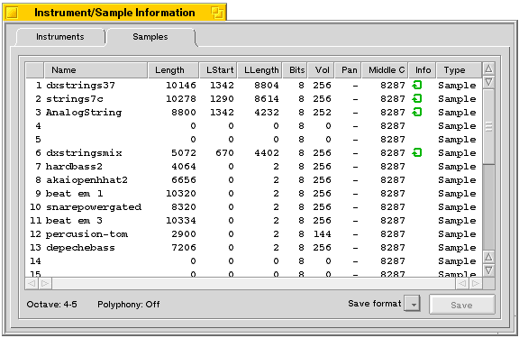

|
|
Instrument/Sample Information
|
Have you ever wondered what modules are made of ? Most modules
consists of a number of small sound bites called samples. They
are stringed together in certain way to create a piece of music.
With the "instrument/sample information" window you
get the possibility to view/play and save these samples. As you
can see above a list is displayed containing lots of information
on the samples, here is a short explanation of the columns.
|

|
Information in window can be sorted at any columns, just double click on the header.
It is also possible to move the columns around, so that the order of the columns can be selected.
|
|
Name |
The name of the sample, often used by the composer to give
information about the tune. |
|
Length |
Size of the sample in bytes. |
|
LStart |
If the sample loops, this indicates the start position. |
|
LLength |
The length of the loop. |
|
Bits |
The quality of the sample (often 8 or 16 bits). |
|
Vol |
Default volumes of the sample (0 - 256). |
|
Pan |
Indicates the placement of the sample in the stereo-spectrum
(0=left, 256=right) |
|
Middle C |
The frequency the C-4 note is played at (the normal value
is 8287Hz). |
|
Info |
indicates that the sample loops. is displayed if the loop ping-pongs. |
|
Type |
Sample (Normal), Synth (AM, FM, Hybrid or Adlib). |
Play a sample:
|
If you suddenly feel like joining in on a module, improvizing
a solo or the like, APlayer is like a dream come through. You
simply select the sample you want to use as an instrument and
play along using the keyboard. A looping sampling will continue
playing as long as you keep a key pressed down.
|
|
A-Z ++ |
The keys are mapped as you might remember from FastTracker
II. |
|
F1 - F8 |
Maps the keyboard to the different octaves. |
|
TAB/DEL |
Turns polyphony on/off. This will let you play upto 3 notes
at a time. |
|
Space |
Stops all samples playing. Emergency button. |
Save a sample:
|
To save a sample select it from the list, choose the format
to save it as (e.g. Audio IFF or Raw) and press the save button.
|
Samples vs. Instruments:
|
Maybe you have been wondering what the difference between samples
and instruments are. It's actually very simple. The samples are
the actual sound clips, while the instruments are different interpretations
of them, meaning that one sample can become many different instruments
with different parameters. The main use for this is to have one
instrument where the sample is maybe fading away and another instrument
where the frequency is changed a bit. All in all it gives the
composer many new possibilities when creating modules without
having the same sample present more than once in the module.
|

|
|
|
|